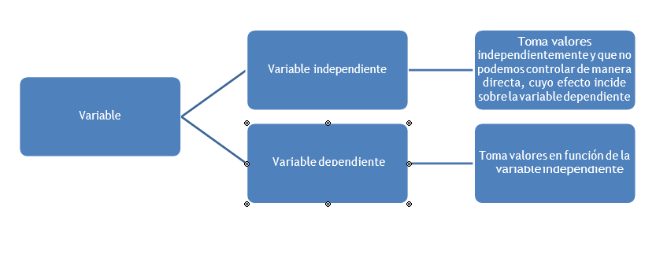
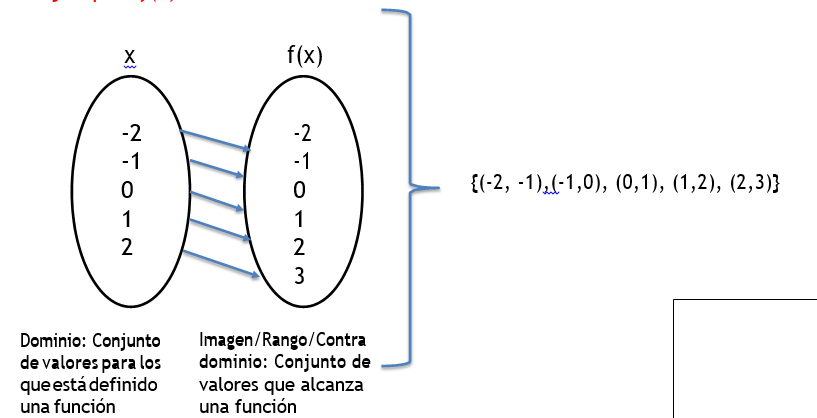
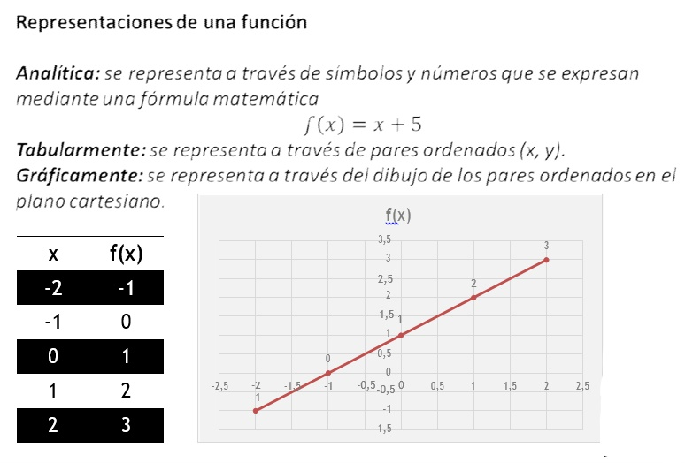
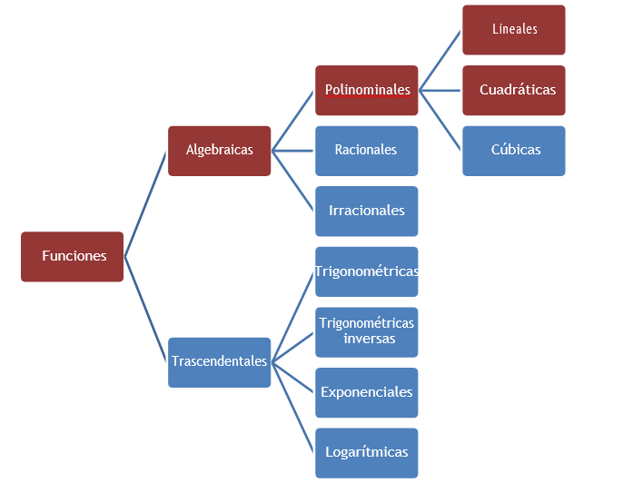
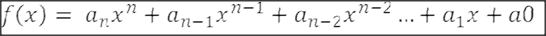
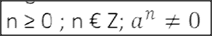
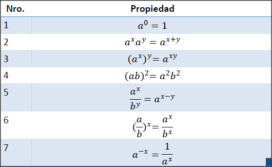

Funciones
- Una variable es un símbolo cualquier que puede representar un valor

Concepto de variable, función, dominio e imagen de una función
Una función es una correspondencia entre dos conjuntos, dónde a la variable
Independiente se le asigna un solo valor.
Ejemplo: f(x) = x+1

Funciones

Clasificación de Funciones

Funciones Polimonial
Son todas aquellas funciones formadas por polimonios, donde el grado
del polimonio lo determina el mayor exponente de la variable

Donde:
- n = número positivo
- a = constante real
Regla:

Tipos de Funciones Polimoniales
Función constante
Es una linea horizontal a la altura del valor del constante.
f(x) = b Ejemplo:
f(x) = -2.5
Función identidad
Es una linea de 45 grados.
f(x) = x
Función lineal
Es de la forma f(x) = ax + b, donde su dominio e imagen
son todos los números reales. Ejemplo:
y = -5x + 3{x = 0;y = 0}
Función Cuadrática
Es de la forma f(x) = ax^2 + bx + c, su gráfica forma una parábola.
Ejemplo:
f(x) = x^2 - 5x + 9
Función Cúbica
Es de la forma f(x) = a3x^3 + a2x^2 + bx + c
Ejemplo:
f(x) = x^3 + 7x^2 - 21x + 14
Funciones Exponenciales
Las funciones exponenciales tienen la forma:
F(x) = a^x ; dónde a > 0 y a ≠ 1
a = constante
x = exponencial (variable independiente)
Conceptos importantes:
• La gráfica de toda función exponencial pasa por el punto (0,1)
• El dominio son todos los números reales (−∞, ∞).
• La imagen/rango son todos los números reales positivos (0 ∞)
Prioridades de los exponentes
